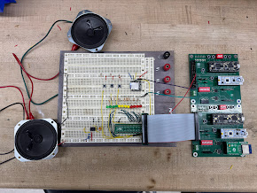

LED Zeppelin
Abstract
MP3 audio data flows from an SD card through the DFPlayer Mini decoder, which converts digital audio to analog output at the STM32’s request via UART commands. The STM32 samples this analog signal and performs a Fast Fourier Transform to extract frequency content. The five highest-magnitude frequency components are selected and combined into a composite square wave by OR’ing five independent timer outputs, each tuned to one selected frequency. This square wave simultaneously drives the audio output (speakers or Tesla coil) and serves as input to the FPGA. The FPGA counts rising edges within 100 ms time windows to determine instantaneous frequency, mapping counts into one of 12 linearly-spaced bins from 0-2000 Hz. Each bin drives an RGB LED with brightness persistence—LEDs illuminate when their frequency is detected and fade over 2 seconds. Three momentary buttons connected to the STM32 control playback (play/pause, next track, previous track).
Summary of our work
We successfully made a music player which would read MP3 files from an SD card, and generate 1) an analog waveform for the music, 2) run a FFT on the waveform, 3) produce a square wave representing the dominant frequencies in the wave, 4) play the square wave representation of the waveform on a speaker.
We were unable to finish building the Tesla coil to spec, and resorted to using standard speakers. Future work would finish assembling the coil, and improve the fidelity the output square wave with filters.
The circuitry is currently on a breadboard, and has yet to be put onto a protoboard.
Initial Specifications vs Achievement
We set out on this project with the initial goal of having a functioning musical tesla coil. This goal was not achieved.
At the beginning, we had set out the following success criteria:
To accomplish the project, we must have a system which: Reads and transmits the music files from the microSD card Play music from the previous device through the MCU and FPGA Tesla Coil Component creates high voltage sparks The sparks toggle on and off at an appropriate frequency to somewhat match the music The music is audible to humans with a reasonably safe distance from the tesla coil
Our achievements are as follows: We successfully read and communicate MP3 files from a microSD via the DFPlayer mini, which is controlled by USART commands from the MCU. This goal was met. We run a compression and conversion from analog voltages to square waves with the top 10 most powerful frequencies included, which are sufficient to drive a MOSFET (for the goal of a tesla coil) or a regular speaker (actually implemented). This goal was met. We did not successfully build a tesla coil. This goal was not met, but was also removed from our specification midway through the project. The signal that is intended to drive the coil, currently driving a speaker, does properly match the music with large losses (very few frequencies are kept). We didn’t build the coil, so there are no sparks. This goal was met with a caveat. The music is audible, and driven from a speaker. This goal was met.
Technical Information
Hardware
For all materials required to impliment this project, see Bill Of Materials
New Hardware includes: The Tesla Coil
Frequency Display We use twelve LEDs, which are either Red, Green, or Blue. Each LED requires 3.3V supply, and their brightness is controlled by PWM. Current limiting: 220Ω resistors per channel. Total current draw: ~720 mA at full brightness. Audio Source We use the DFPlayer Mini, an MP3 decoder module with an onboard DAC that supports SD cards up to 32 GB.The Mini is controlled via UART at 9600 baud. It spits out an analog audio output (0.6 Vpp). It takes 3.3V power from STM32.
The primary new hardware is the Tesla coil, which is made of two stages: The primary stage has DC power fed through a buck converter, into a resonant circuit from a capacitor and the primary coil winding. The secondary stage is not electrically connected, but is situated within range of the electromagnetic field produced by the first stage. This is made of a large inductor and a topload (a ball of aluminum), and acts as the second resonant circuit.
In addition to the Tesla Coil, we integrated the DFPlayer Mini, which communicates via USART, and a 3 color 12 LED display. The DFPlayer came with poor documentation riddled with typos and few resources available regarding integration with MCUs besides arduinos.
FPGA
Overview
We used the iCE40 UP5K.
MP3 audio data flows from an SD card through the DFPlayer Mini decoder, which converts digital audio to analog output at the STM32’s request via UART commands. The STM32 samples this analog signal and performs a Fast Fourier Transform to extract frequency content. The five highest-magnitude frequency components are selected and combined into a composite square wave by OR’ing five independent timer outputs, each tuned to one selected frequency. This square wave simultaneously drives the audio output (speakers or Tesla coil) and serves as input to the FPGA. The FPGA counts rising edges within 100 ms time windows to determine instantaneous frequency, mapping counts into one of 12 linearly-spaced bins from 0-2000 Hz. Each bin drives an RGB LED with brightness persistence—LEDs illuminate when their frequency is detected and fade over 2 seconds. Three momentary buttons connected to the STM32 control playback (play/pause, next track, previous track).
Led Control Each bucket maintains a 16-bit persistence timer counting down from 65535 (2.05 seconds at 48 MHz with 1024 prescaler). When a frequency is detected, the corresponding timer resets to maximum. Timer values map logarithmically to PWM duty cycle for LED brightness, creating exponential decay. A no-signal LED illuminates when all pulse counters read zero for one full window.
Block Diagram
The block diagram for this project shows the MCU communicating with the DFPlayer Mini over UART on pins PA9 (TX) and PA10 (RX). As an analog signal leaves the DFPlayer to drive the speaker, it is read by pin PA5 on the MCU. The MCU reads it using its ADC, and runs an FFT on the signal, producing a square wave composed of the 5 most dominant frequencies. The FPGA reads this on pin P12 and outputs PWM waves to 12 LEDs with a duty cycle related to how prevalent the corresponding LED’s frequency is in a 2 second window.

State Transition Table


MCU
Overview
The STM32L432KC MCU is the workhorse of this project. It operates three concurrent tasks: DFPlayer control, audio processing, and user input handling. The MCU has three user input buttons: Play/Pause the current song, move to the next song, and return to the previous. It sends USART commands based on these to the DFPlayer mini, and then converts the analog audio signal to a square wave for use further down the line. Software Architecture: Main loop polls button states with software debouncing (10 ms) and issues UART commands to the DFPlayer (9600 baud). Audio processing runs in a timer interrupt at 8 kHz sampling rate. DFPlayer Mini configuration: The DFPlayer mini takes long byte sequence commands to configure, in the structure: 0x7E 0xFF 0x06 CMD PAR1 PAR2 CHECKSUM 0xEF. We are using the functionality for Play (0x0D), Pause (0x0E), Next (0x01), Previous (0x02), Volume (0x06). FFT: Audio samples are buffered in a 512-sample circular buffer. Every 64 ms (512 samples at 8 kHz), the CMSIS-DSP library arm_rfft_fast_f32 computes a 512-point real FFT with Hann windowing. Output provides 256 frequency bins with 15.625 Hz resolution (8000 Hz / 512). Magnitude is computed via arm_cmplx_mag_f32, and the top 5 non-DC bins are identified by sorting.
Square wave: Five hardware timers (TIM2/3/15/16/17) generate independent square waves at the detected frequencies. Each timer’s ARR register updates when a new frequency is identified. Timer outputs connect to a hardware OR gate (external logic) before routing to both the FPGA and speaker amplifier. Update rate: 15.625 Hz (once per FFT frame).
Configuring the Audio Source
We are using the DFPlayer Mini mp3 to analog decoding module. This module is controlled via USART messages for various functionality, including changing songs, redoing, and traversing within a song.
Outputting a square wave The square wave is the signal intended to control the Tesla Coil and or Speakers. This square wave is generated by performing an Fast Fourier Transform on the analog signal from the Audio Source. The top 5 (although replaceable with any N) most powerful frequencies are selected and sent out in the square wave. Each frequency has its own timer signal, all of which are or’d together. In this way, there is a clean square wave output that still encodes the dominant information from the music.
Tesla Coil
The calculations for our prototype Tesla Coil can be found here: Tesla Coil Calculations
Schematic
The MCU is powered over USB, and three push buttons are connected to the MCU to trigger the MCU to send commands for previous song (PA8), play/pause (PA6), and next song (PB7).
The DFPlayer requires a separate 5V power source to supply enough power to the speaker.

Quantitative Assessment
FPGA
The FPGA samples incoming square waves for 100 ms, counting falling edges. Each edge count corresponds to 10 Hz (1 edge / 0.1 s = 10 Hz). This gives an absolute frequency resolution of ±10 Hz due to integer edge count quantization. Frequency bucket mapping: Bucket 0: 0-16 edges → 0-160 Hz Bucket 1: 17-33 edges → 170-330 Hz Bucket 2: 34-50 edges → 340-500 Hz Bucket 3: 51-67 edges → 510-670 Hz Bucket 4: 68-83 edges → 680-830 Hz Bucket 5: 84-100 edges → 840-1000 Hz Bucket 6: 101-117 edges → 1010-1170 Hz Bucket 7: 118-134 edges → 1180-1340 Hz Bucket 8: 135-150 edges → 1350-1500 Hz Bucket 9: 151-167 edges → 1510-1670 Hz Bucket 10: 168-184 edges → 1680-1840 Hz Bucket 11: >184 edges → >1840 Hz
Because there are few LEDs, the 10 Hz quantization is not a significant limitation for the display, since the widths of the bins are so much larger.
MCU
Latency
The MCU’s ADC needs 256 samples to run each iteration of the FFT. At 8000 hz, this corresponds to 32 ms. On average, a signal will turn to become a frequency in the middle of a window, so 1.5 would need to be taken on average to capture the frequency and properly output a square wave, which is ~48 ms latency. Computation time is negligible relative to waiting for samples to arrive, given the PLL clock runs at 80 MHz.
####FFT Accuracy The sampling rate is 8 kHz, which sets a maximum representable frequency of 4 kHz (Nyquist limit). The 256-sample Cooley-Tukey FFT produces frequency bins spaced 31.25 Hz apart (8000 Hz / 256 = 31.25 Hz). This FFT size was chosen to balance frequency resolution against latency—doubling to 512 samples would halve the bin spacing to 15.6 Hz but double the latency to 64 ms. Configured frequency range: 100 Hz - 2000 Hz (software thresholds to reject noise and high harmonics)
100 Hz was artificially chosen as the minimum kept frequency, since we don’t expect our music to go below that (at worst, 40 hz drums - but we wanted to prevent sources of noise from coupling into the output square wave, given how powerful 60 hz is). Because the bins are 31.25 hz apart, the frequency accuracy while sorting them on the order of 100 hz is very low. At the worst, 100 hz would be represented as 125 hz, which is a 125/100. This is an error of 25 hz out of the total 100 hz, which is a whopping 25% inaccuracy, although this is a special case since we don’t have any sub-100 hz frequencies. The error is much less drastic for slightly higher frequencies, with a maximum of 2khz (arbitrary, also to stay within good audio range). 2 KHz is a multiple of 31.25, so the worst case would be half way to the previous frequency bin, aka 2KHz - 31.25/2 = 1983.875 Hz, which would be categorized as 1968.75 - which is relatively an error of 0.8%.
Synthesized Square Wave Accuracy
TIM15, which is used to run the output square wave, uses a 100 kHz interrupt rate - which is sufficient to perfectly capture every frequency.
Pictures and Video!

Code
See our codebase of development here: Github
Contacts
Members: Joshua Heinstein ’26 and Sorin Jayaweera ’27.
Joshua Heinstein Linked In jheinstein@g.hmc.edu
Sorin Jayaweera Linked In, sojayaweera@g.hmc.edu
Sorin Jayaweera is a current Harvey Mudd student, studying a mixture of solid state and soft matter Physics, with many electrical and systems engineering related projects.
Joshua Heinstein is currently a Harvey Mudd student, with a focus on electrical engineering.
Acknowledgements
Special thank you to Hackaday, for the tutorial on analog electronics to drive a tesla coil, Mathew Spencer, for assistance talking through the design specs of our project, Anthropic and OpenAI for the use of artificial programming assistance
Resources
FLEXPCB. (2024, June 17). I2S Protocol: The Beginner’s Ultimate Guide. FLEXPCB. https://flexpcb.org/i2s-protocol-the-beginners-ultimate-guide/ Flex PCB Armstrong, Z. (2022, December 11). Making the Ultimate Class-E Musical Tesla Coil. Hackaday.io. https://hackaday.io/project/188598-making-the-ultimate-class-e-musical-tesla-coil hackaday.io+1 Steve Ward [YouTube channel]. (2022, December 11). Making the Ultimate Class-E Musical Tesla Coil – official tutorial video [Video]. YouTube. https://www.youtube.com/watch?v=Hez-R-WF5P0 LabCoatz. (n.d.). Building the Ultimate Solid-State Tesla Coil (Music-Capable!): a Complete Guide. Instructables. https://www.instructables.com/Building-the-Ultimate-Solid-State-Tesla-Coil-MUSIC/ Instructables LabCoatz. (n.d.). Making the Ultimate Class-E Musical Tesla Coil (Single-FET SSTC) | a Complete Build Tutorial. Instructables. https://www.instructables.com/Making-the-Ultimate-Class-E-Musical-Tesla-Coil-Sin/ Instructables Steve Ward [YouTube channel]. (n.d.). Building the Ultimate Solid-State Tesla Coil – music-capable SSTC [Video]. YouTube. https://www.youtube.com/watch?v=zCf-PwXsG_E RIMSTAR. (n.d.). Small Spark-Gap Tesla Coil Project — Tesla Coil Spark Gap (Small). rimstar.org. https://rimstar.org/science_electronics_projects/tesla_coil_spark_gap_small.htm Steve Ward [YouTube channel]. (n.d.). Tesla Coil Demonstration Video [Video]. YouTube. https://www.youtube.com/watch?v=Ca2e3evwVK0